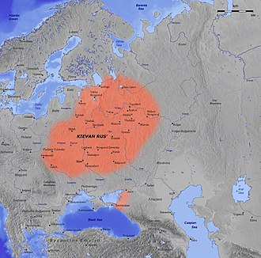

În antichitatea clasică, stepa Pontică era denumită Sciția. Începând cu secolul al VIII-lea î.e.n., negustorii antici greci au adus civilizația lor în prăvălliile din Tanais și Phanagoria. Unii exploratori greci, cel mai cunoscut dintre aceștia fiind Pytheas, au ajuns chiar până la actualul Kaliningrad, la Marea Baltică. Romanii s-au așezat și ei pe țărmul vestic al Mării Caspice, unde imperiul lor avea extremitatea răsăriteană. În secolele al III-lea și al IV-lea e.n., există legende despre un regat got al lui Oium în sudul Rusiei care a fost, apoi, cucerit de huni. Între secolele al III-lea și al VI-lea e.n., Regatul Bosforului, o entitate statală elenistică succesoare a coloniilor grecești, a căzut și el sub presiunea invaziilor unor popoare războinice nomade, ca hunii și avarii. [34] Popor turcic, hazarii au dominat stepele Volgăi inferioare dintre Mările Caspică și Neagră până în secolul al X-lea.
Rușii moderni consideră drept strămoși triburile slave, despre care unii specialiști spun că ar fi originare din zonele împădurite ale mlaștinilor Pinsk. Slavii răsăriteni s-au stabilit treptat în vestul Rusiei, în două valuri: unul dinspre Kiev spre actualele Suzdal și Murom și un altul din Polotsk spre Novgorod și Rostov. Începând din secolul al VII-lea, slavii răsăriteni formează cea mai mare parte a populației vestului Rusiei și au asimilat popoarele fino-ugrice băștinașe, inclusiv meria, muromii, și meșcerii, triburile scite și sarmatice iar mai târziu și triburile varegilor de origine germanică.
Înființarea primelor state ale slavilor răsăriteni în secolul al IX-lea a coincis cu sosirea varegilor – negustori, războinici și coloniști din regiunea Mării Baltice. Ei erau în primul rând vikingi de origine scandinavă, care s-au aventurat de-a lungul căilor navigabile de pe țărmul estic al Mării Baltice până la Mările Neagră și Caspică.[38] Potrivit Cronicii vremurilor trecute, un vareg dintre rusi, pe nume Rurik, a fost ales domn al Novgorodului în 862. În 882, succesorul lui, Oleg, s-a extins spre sud și a cucerit Kievul, care, până atunci, plătea tribut hazarilor, întemeind Rusia Kieveană. Oleg, Igor (fiul lui Rurik) și Sviatoslav (fiul lui Igor) au supus apoi triburile locale est-slave dominației kievene, au distrus haganatul hazar și au lansat mai multe expediții militare în Bizanț și Persia.
În secolele al X-lea și al XI-lea, Rusia Kieveană a devenit unul dintre cele mai mari și mai prospere state din Europa. Domniile lui Vladimir cel Mare (980-1015) și a fiului lui, Iaroslav cel Înțelept (1019-1054), constituie Epoca de Aur a Kievului, în care s-a acceptat creștinismul ortodox de la Bizanț și a apărut primul cod de legi al slavilor răsăriteni, Russkaia Pravda.
În secolele al XI-lea și al XII-lea, incursiunile constante ale triburilor turcice nomade, cum ar fi kipceakii și pecenegii, au provocat o migrație masivă a populațiilor slave spre regiunile des împădurite din nord, în special în zona cunoscută sub numele de Zalesie.
Russia Kieveană în secolul al 11-lea
Epoca feudalismului și descentralizării a fost marcată de o permanentă luptă internă între membrii dinastiei Rurik care domnea colectiv în Rusia Kieveană. Dominația Kievului a slăbit, în folosul statului Vladimir-Suzdal, în nord-est, Republicii Novgorod în nord-vest și a Galiției-Volîniei, în sud-vest. În cele din urmă, Rusia Kieveană s-a dezintegrat, lovitura finală fiind dată de invazia mongolă din 1237–40 care s-a soldat cu distrugerea Kievului și cu moartea a circa jumătate din populația țării. Elita mongolilor invadatori, împreună cu popoarele turcice cucerite de aceștia (cumani, kipceaki, bulgari), au format poporul tătar, și au întemeiat Hoarda de Aur, de unde au continuat să prade cnezatele rusești; mongolii dominau confederația cumano-kipceakă și Bulgaria de pe Volga (în zona sudului și centrului Rusiei europene de astăzi) timp de peste două secole.